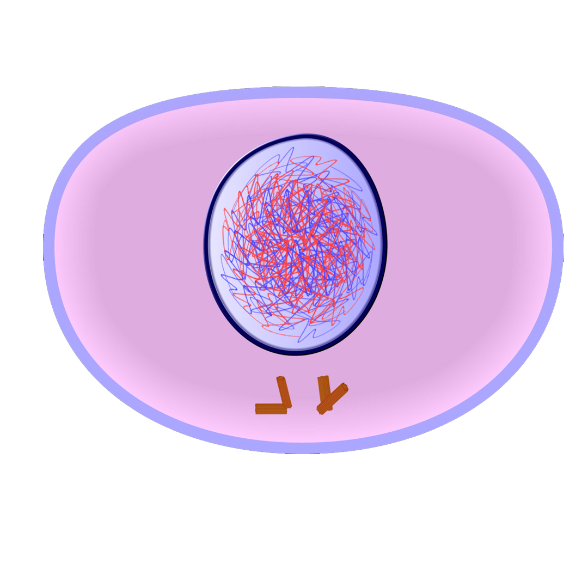
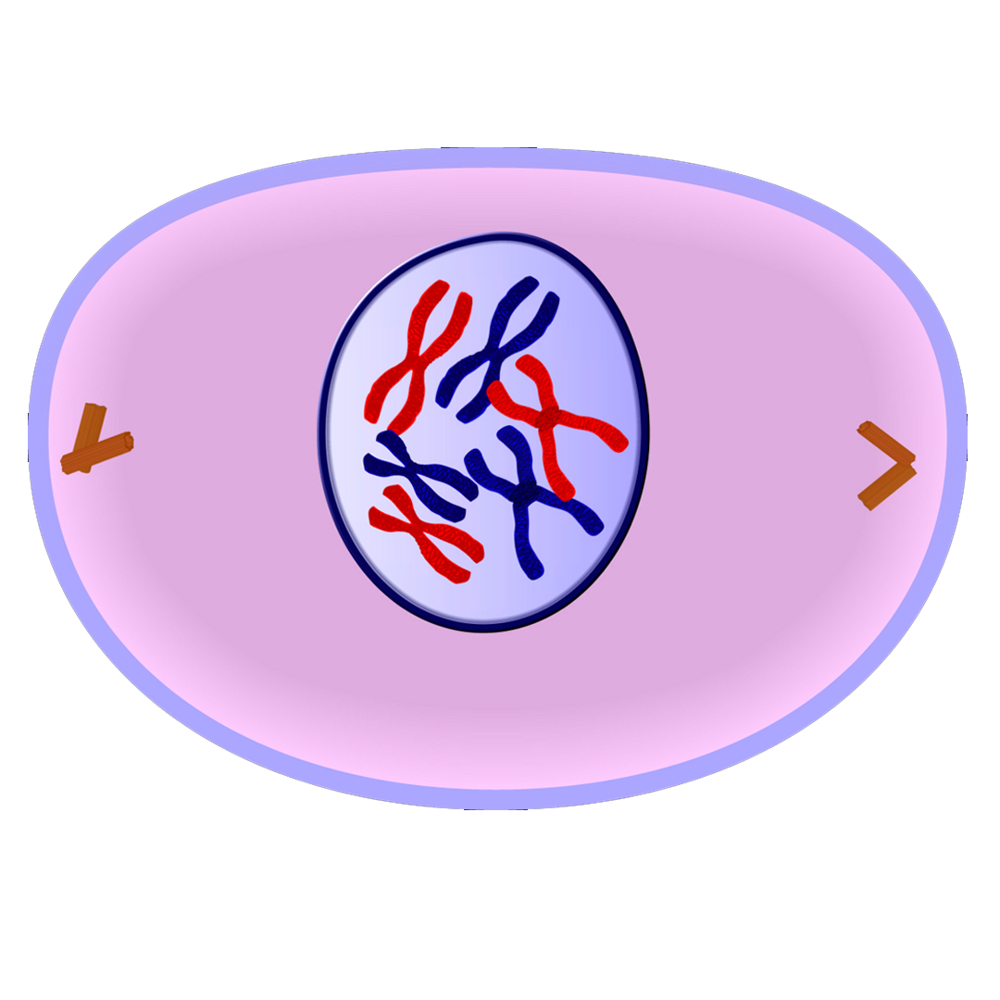
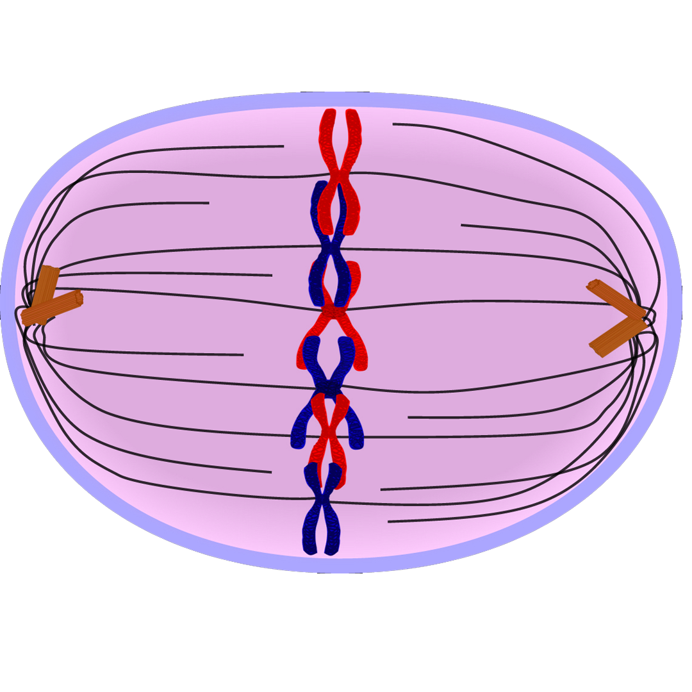
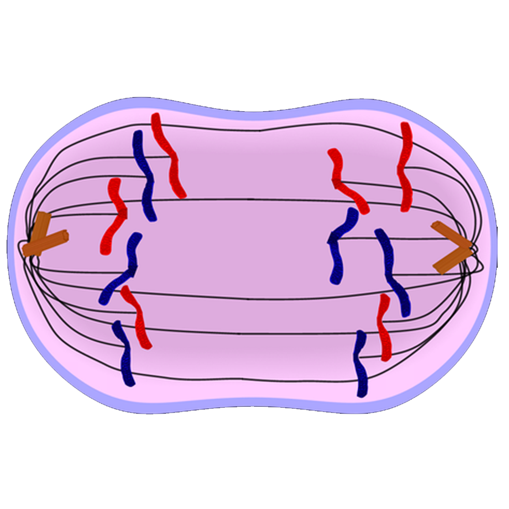
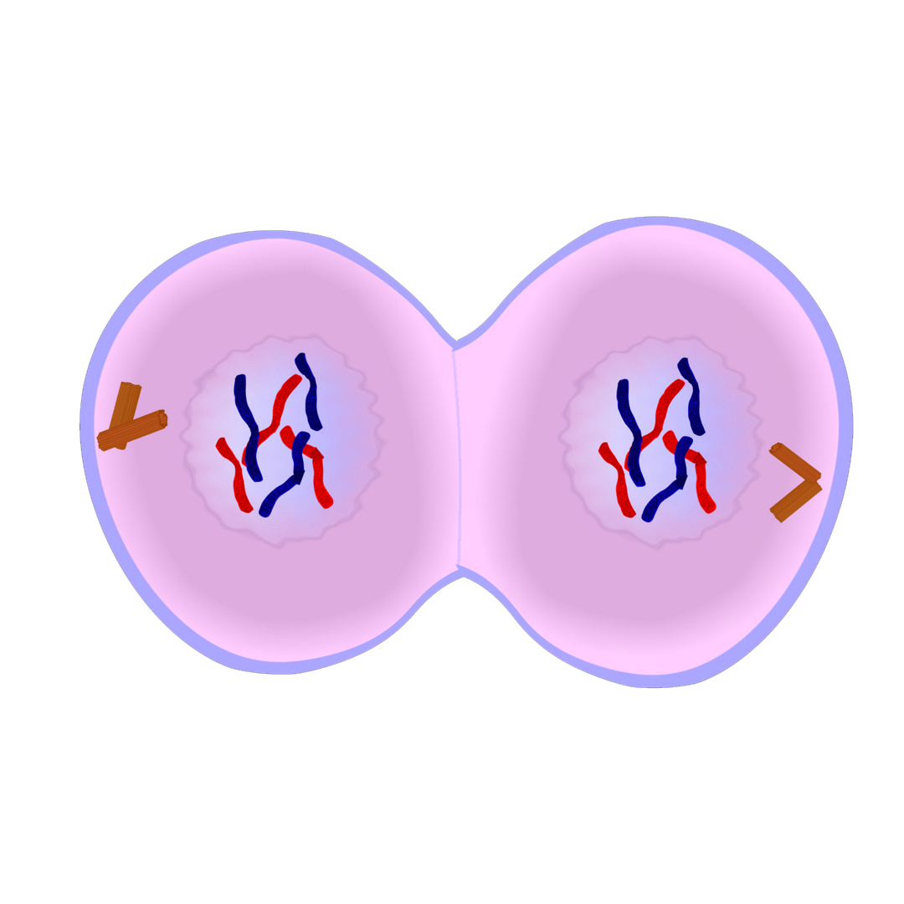
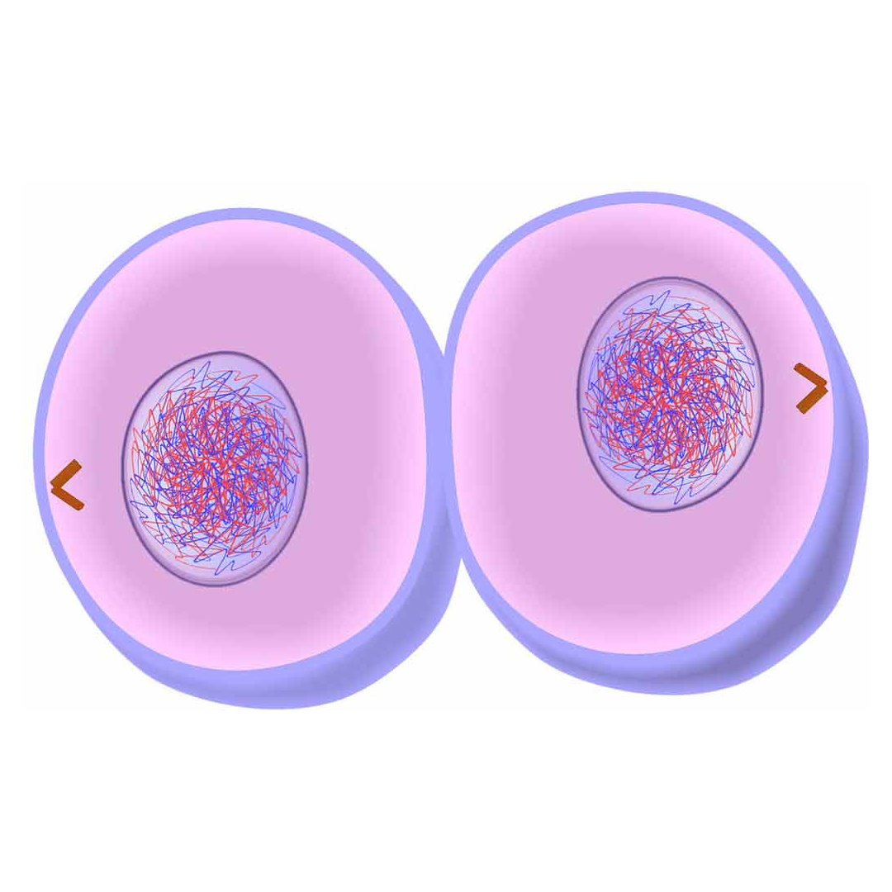

Grade 10 Biology
| Digestive System | ||
| Four main stages | -ingestion -digestion -absorption -elimnation |
|
| Two Types of Digestion | -mechanical -chemical |
|
| Digestive Tract | -long tube with openings on each side -made of epithelial tissue with layers of muscle and nerve |
|
| Injestion | ||
| Mouth | -Teeth mechanically break down food -Chemical breakdown of simple sugars and carbohydrates -Salivary glands produce saliva to lubricate food -Tongue turns food into bolus |
|
| Esophagus | -After swallowing peristalsis moves the bolus to stomach -Made of smooth muscle tissue: Contract and relax without conscious thought |
|
| Digestion | ||
| Cardiac Sphincter | Circular muscle that controls movement of food entering the stomach | |
| Stomach | -Lining contains cells produce enzymes and acids Mechanical mixing -muscular walls Chemical breakdown -proteins -by acids and enzymes -mucus layer protects from acids |
|
| -pyloric sphincter | circular muscle that controls the movement of chyme into the duodenum | |
| Small Intestine | (Duodenum) -Mucus lining -enzymes from pancreas complete the digestion -material leaving the stomach and entering the intestine is called chyme -stomach acids are neutralized by bile from the gall bladder |
|
| Absoprtion | ||
| Small Intestine | (jejunum, ileum) -Villi -increase surface area to absorb nutrients and move to blood stream -each contain network of blood vessels -fats go in bloodstream |
|
| Large intestine | -Water absorption -Vitamin absorption (b and k) |
|
| Egestion | ||
| Rectum and Anus | -Waste is compacted, stored and elimination is controlled | |
| Accessory Organs | ||
| Liver | -produces bile which helps breakdown fats | |
| Pancreas | -produces enzyme called insulin -regulates the concentration of glucose (sugar) in the blood |
|
| Gall Bladder | -stores bile | |
| Diseases | ||
| Diabetes | -Description: pancreas produces too much or too little insulin -Signs and Symptoms: weakness and dizziness -Treatment: controlled by diet |
|
| Heartburn | -Description: acidic fluid backs up into esophagus (no mucus layer) -Signs and Symptoms: Burning sensation -Treatment: Taking an antacid |
|
| Colitis | -Description: Epithelial tissue lining becomes inflamed and stops working properly -Signs and Symptoms: caused by viruses, bacteria, narrowed blood vessels, and failure of the body’s disease-fighting mechanism. Diarrhea and vomiting -Treatment: diagnosed with aid of endoscope and microscope examination of tissue from colon |
|
| Label parts | ||
 |
A: Liver B:Gall bladder C:Duodenum D:Transverse E:Ascending F:Descending G:Cecum H:Appendix I:pancreas J:stomach |
|
| Circulatory System | ||
| Purpose | -Transport substances around the body -moves nutrients from small intestine -waste products are carried out to the kidneys |
|
| Made up of: | -blood -heart -blood vessels |
|
| Blood | ||
| Red blood cells | (45%) -transport oxygen -contain enzyme called hemoglobin which allows them to transport oxygen |
|
| White blood cells | (less than 1%) -fight infections, bacteria, and viruses -only blood cell to have a nucleus |
|
| Platelets | (less than 1%) -prevent clotting |
|
| Plasma | (55%) -fluid part -rich in protein |
|
| Heart | ||
| Purpose | Pump that keeps blood moving around the body | |
| Sides | -Right side pumps blood to lungs -Left side pumps blood to body |
|
| Tissues | -made of cardiac muscle tissue (only found in heart), nerve and connective tissue -undergoes synchronized contractions and conducts electrical impulses -Heart rate is regulated by nerve tissue -Lined with epithelial tissue |
|
| Blood Vessels | ||
| Purpose | Network of tubes to carry out blood | |
| Arteries | -Carry blood away from the heart -Have more pressure because going away and have thicker walls to withstand pressure |
|
| Veins | -Carry blood towards the heart -lowest pressure so walls are not as thick |
|
| Capillaries | -tiny blood vessels with thin walls for exchange of oxygen and nutrients -Let oxygen and nutrients diffuse from surrounding tissue |
|
| Movement of blood | ||
| Occurs in two circuits | -Pulmonary Circuit -Movement in the heart -Systemic Circuit -Movement in the body |
|
| Systemic circuit order | -Heart, Aorta, Arteries, Arterioles, Capillaries, Venules, Veins, Vena Cava, heart | |
| Pulmonary circuit order | -Superior and inferior vena cava, right atrium, tricuspid valve, right ventricle, pulmonary artery, lung capillaries, pulmonary vein, left atrium,mitral valve, left ventricle, aortic valve, aorta, rest of body | |
| Diseases | ||
| Coronary Artery Disease | -Description: Coronary Artery, artery that supply blood to the heart muscle tissue become partially blocked with plaque -Signs and Symptoms: tiredness, dizziness, pain and burning sensation in chest or arms -Treatment: Angiogram -fluorescent dye is injected into bloodstream which shows up on x ray |
|
| Heart attack | -Description: Coronary Arteries completely blocked by plaque or clotting. Heart muscle cells no longer receive oxygen and nutrients to function. Heart stops pumping and heart tissue start dieing. -Signs and symptoms -denial -nausea -dizziness -upper body pain -sweating -unusual fatigue -Treatment: diagnosed with blood test or electrodiagram |
|
| Label parts | ||
 |
A: Superior Vena Cava B: Right pulmonary arteryr C:Right pulmonary vein D:Right atrium E:Tricuspid Valve F:right ventricle G:Inferior Vena Cava H:Septum I:left ventricle J:Mitral Valve K:Pulmonary Valve L: Left atrium M:Left Pulmonary Vein N:Left Pulmonary Artery O:Aorta |
|
| Respiratory System | ||
| Respiration | - Air with oxygen enters lungs - oxygen enters into blood and carbon dioxide leaves. This is gas exchange or respiration |
|
| Breathing | -the process of inhaling and exhaling | |
| Inspiration | -process of inhaling -diaphragm lowers and increases volume of chest cavity - equals a decrease in pressure -Air moves from outside into the lungs (air moves from high to low pressure) |
|
| Expiration | -process of exhaling -diaphragm raises and decreases the volume of the chest cavity -causes increase in pressure -Air moves from lunges to outside of body (High to low pressure) |
|
| The movement of air | -the movement of air takes a path that moves it from the mouth to the lungs -air moving through the system allows for speech, smell, and the warming and moistening of air |
|
| Passage of air | -nostrils, nasal cavity, turbinate bones (in nasal cavity), pharynx, Larynx, trachea, bronchus, bronchioles, alveoli | |
| Gas exchange | -alveoli are thin walled structues surrounded by capillaries -oxygen transfers to bloodstream and carbon dioxide is removed -surface area of alveoli is 40x greater than surface area of skin -alveoli are only a single cell thick and gases move through by diffusion |
|
| Health | -trachea, bronchi, and bronchioles have mucus-producing cells to trap particles that may enter longues -cilia covers surface which moves mucus to keep the lungs clear of particles that may interfere with gas exchange |
|
| Diseases | ||
| Tuberculosis | -Description: infectious disease caused by bacteria that enters your lungs when you breathe -Signs and Symptoms: fever, cough, weight loss and chest pain -Treatment: diagnosed via chest x ray and samples of lung and stomach secretions |
|
| SARS | -Description: Severe Acute Respiratory Syndrome -Signs and symptoms: flu like, shortness of breath, dry cough, muscle pain -Treatment: chest x ray and lab results |
|
| Label parts | ||
 |
1.nose 2.mouth 3.larynx 4.lung 5. right bronchus 6. diaphragm 7. pharynx 8. trachea 9. left bronchus 10. bronchiole 11. alveoli |
|
| Cells | ||
| Tell if something is alive | -can take in food and use energy -can grow and repair its body -can get rid of waste -can sense what is around it and respond -has a lifespan -can store genetic information -can reproduce |
|
| Cell theory | -all living organisms are composed of one or more cells -cells are the basic units of structure and function in all organisms. -all cells come from previously existing cells |
|
| Prokaryote | -cell that does not contain a nucleus or other membrane bound organelles -bacteria |
|
| Eukaryote | -cell that contains a nucleus and other organelles, each surrounded by a membrane -animal or plant cell |
|
| Organelles | ||
| Cytoplasm Microtubules Microfilaments |
-mostly water -fluid material -hold organelles and help move them through cell |
|
| Protoplasm | -Everything inside the cell including the nucleus | |
| Cell membrane Plasma membrane |
-the cell is surrounded by a flexible double-layered cell membrane -support cell and allow some substances to enter while keeping others out (pores) -called semi-permeable membrane -contains phospholipid bilayer |
|
| Nucleus Nucleolus |
-most important -directs cell activity -DNA -surrounded by nuclear membrane |
|
| Mitochondria | -powerhouse of the cell -make energy -more active cells, muscles, have more mitochondria -energy stored as glucose |
|
| Endoplasmic Reticulum | -transports things around cell -rough and smooth ones -rough has ribosomes smooth do not -chemical reactions take place |
|
| Golgi bodies | -processes and packages materials | |
| Vacuoles | store food and water | |
| Lysosomes | destroy harmful chemicals | |
| Ribosomes | -make proteins -have large and small subunit |
|
| Flagellum | -tail for movement | |
| Peroxisome | -break down fatty acids | |
| Cilia | -hair like structures for movement or sensing things | |
| Cytoskeleton | -Consists of hollow tubes which provide support for the cell | |
| Organelles only in plant cells | ||
| Cell Wall | -structure outside of cell membrane | |
| Vacuole | -plants normally have one large vacuole | |
| Chloroplast | -contain chlorophyll -traps energy |
|
| Label cell parts | ||
 |
 |
|
 |
 |
|
| Microscope stuff | ||
| Field of view | ||
| Objective Lens | Field Diameter (mm) and (μm) |
|
| 4x 10x 40 |
4.5 and 4500 1.8 and 1800 0.45 and 450 |
|
| Actual size equation | field diameter/ # of specimens fitting across field diameter | |
 |
 |
|
| Mitosis | ||
| Functions of mitosis | -growth -repair -asexual reproduction |
|
| Important cell parts | ||
| Centrioles | -2 per cell -arranged at right angles -make spindle fibers |
|
| Nuclear Membrane | -Keeps genetic material separate from the rest of cell -will break apart |
|
| Chromatin | -long strands of DNA -later thickens into chromosomes |
|
| Chromosome | -chromatin that has coiled up -later makes a copy of itself |
|
| Sister Chromatids | -Still one chromosome -attached in the middle by a centromere |
|
| Cell Cycle | ||
| Name of Cell Cycle Phase |
Description | Diagram |
| Interphase | -cell grows and doubles in size -more organelles are made -centrioles duplicate -DNA/chromosomes duplicate |
 |
| Prophase | -Chromatin coils (condenses) up into chromosomes -nuclear membrane starts to disappear -2 centriole pairs move to opposite sides of the cell -Spindle fibers begin to grow from the centrioles |
 |
| Metaphase | -Nuclear membrane disappears completely -chromosomes line up on the equator of the cell -Each centromere has a spindle fiber attached to it |
 |
| Anaphase | -spindle fibres contract -pull sister chromatids apart -now called daughter chromosomes -chromosomes move to opposite poles |  |
| Telophase | -chromosomes arrive on opposite sides of the cell -Nuclear membrane starts to form around the two groups -cytoplasm starts to pinch together -chromosomes will turn back into chromatin |  |
| Cytokinesis | -Chromosomes unravel into chromatin -Nuclear membrane fully form around the chromatin -Cytoplasm continue to pinch together until they eventually separate -two daughter cells are formed -new cell wall begins to form |  |
| Checkpoints in the cell cycle | -Cell’s activities are controlled at specific points called checkpoints -Specialized proteins monitor cell activity -Proteins send messages to the nucleus -Nucleus instructs cell whether or not to divide |
| A cell should stay in interphase and not divide if: | signals from surrounding cells tell it not to divide -there is not enough nutrients to provide for cell growth -the DNA within the nucleus has not been replicated -DNA is damaged |
| Cancer | |
| Definition | -A group of diseases in which cells grow and divide out of control -Mitosis out of control -The cancer cells continually divide and consume resources and space, they do not “do their job” during interphase. |
| Causes | -random genetic mutation -environmental factors -chemical (tobacco smoke) -radiation (cosmic rays) -virus -smoking -9/10 lung cancer caused by smoking -15% survival rate for lung cancer |
| Metastasis | when tumour gets in blood vessels, cancerous cells can be carried to other parts of body to create secondary tumour -lung cancer easy to metastasize because a lot of blood |
| Types | |
| Benign | -not cancer -tumour cells only grow only locally and cannot spread by invasion or metastasis |
| Malignant | -cancer -cells invade neighboring tissues, enter blood vessels , and metastasize to different sites |
| Prevention | |
| screenings | -ABCD for moles -Asymmetry, border, colour, diameter -Pap test -Breast self examination -Testicular self examination |
| lifestyle | -healthy diet -exercise -don’t smoke |
| Diagnosis | -most cancers go undetected -early detection will greatly increase survival rate -Tools used for diagnosis -X-ray -ultrasound -CT or CAT scan -MRI -biopsy |
| Stem cells, Differentiation, Specialization, and Hierarchy | |
| Hierarchy | -cells -Tissues -Organs -Organ System |
| embryonic | at this stage, the cell has the potential to become any type of cell found in the body |
| Differentiation | the process where a cell becomes differentiated to perform a specific function by becoming a specific tissue type |
| four tissue types | -muscle -nerve -epithelial -connective |
| Stem cells | |
| embryonic stem cells | embryonic stem cells are undifferentiated cells that can differentiate to become the cells of any tissue type. Embryonic stem cells are only found in embryos |
| Adult stem cells | are stem cells that have differentiated and are found in tissues. They are limited to becoming any type of specialized cell found in that tissue |
| From stem cell to specialized cell | |
| Embryonic stem cell | Undifferentiated and non-specialized Can become any type of cell in the body |
| Adult stem cell | Differentiated and non-specialized Differentiated into a tissue type but can become any type of cell in that tissue |
| Specialized Cell | Differentiated and specialized A specialized cell of a tissue. |
| Plants | |
| Plant organs | -stem -root -leef -flower |
| Plant tissues | |
| Meristematic cells | undifferentiated and divide to form specialized cells (mitosis) |
| Dermal Tissue | Outer Cover, protects |
| Ground Tissue | Photosynthesis and support |
| Vascular Tissue | Transports water, nutrients and sugar |
| Leaf | |
| Function | surface area of photosynthesis |
| Epidermis | releases waxy cuticle which limits evaporation of water |
| Xylem | Delivers water and minerals from roots |
| Phloem | picks up sugars (made from photosynthesis) and delivers to the rest of the plant |
| Guard cells | control the opening of stoma(pores) on the underside of the leaves, which are responsible for gas exchange |
| Stem | |
| Function | Physical support and transport of water, nutrients, and sugars |
| Xylem | transports water and nutrients from roots |
| Phloem | transports sugars from the leaf |
| Roots | |
| Function | anchor, takes up water and minerals, storage |
| root hairs | main site of water and mineral absorption |